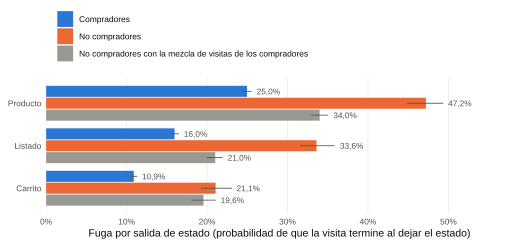

P4 y P5 con diferenciación de visitas
Complemento de la pestaña “Respuesta P4 y P5 con diferenciación de visitas”. Anexo principal de P5: anexo-p5.
Reglas de clasificación
Complemento de P4 y P5 (pestaña “Respuesta P4 y P5 con diferenciación de visitas”). Cada visita recibe un nombre según cómo navega, no según si compró. La base no cambia: la suma de las transiciones de los cinco tipos reproduce exactamente la matriz de P4. Inspirado en Moe (2003), sin clustering: describe comportamiento, no intención comprobada.
| Orden | Tipo | Regla | Por qué esta señal | Equivalente en Moe (2003) |
|---|---|---|---|---|
| 1 | Superficial (rebote) | 1 solo clic | Entra y se va | Visitas superficiales |
| 2 | Compra dirigida | Llega al carro (Agregar al carro o Carrito) o al Checkout, compre o no | Señal más clara de que eligió un producto | Compra dirigida |
| 3 | Gestión de cuenta | Entra a Cuenta y servicios sin ver fichas | Viene a revisar un pedido o su cuenta | No está en Moe (propia de un retailer con cuenta) |
| 4 | Busca y compara | Usa el buscador (y no llega al carro) | Escribir una búsqueda indica que viene a algo específico | Búsqueda y deliberación |
| 5 | Explora (vitrinea) | El resto: navega sin buscar y sin llegar al carro | Mira sin un objetivo concreto | Exploración (hedonic browsing) |
Probabilidad de que una visita sea de cada tipo
P4 por tipo: camino más probable

P4 por tipo: matriz completa (por clic, con autotransiciones)
P5 por tipo: fuga por salida de cada estado
Entre paréntesis, las salidas del estado. Se muestran solo celdas con 30 salidas o más.
¿La diferencia entre grupos viene del tipo de visita?

Sensibilidades
Compradores antes y después de su 1ª compra:
Reglas alternativas (una a la vez):
Semanas:
Script: fase7_p45_tipos_visita.R (en la carpeta Script R tesis) · datos: p45_tipos_anexo.json.
Anexo P4 y P5 · Tipos de visita · Desafío 2 Customer Journey Falabella · Datos: julio 2026. Cálculo propio en R.